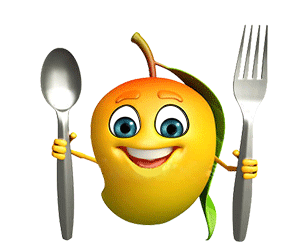

- A mango is an edible stone fruit produced by the tropical tree Mangifera indica which is believed to have originated from the region between northwestern Myanmar, Bangladesh, and northeastern India.Worldwide, there are several hundred cultivars of mango.
- Mango is a low-calorie fruit that is high in fibre, and is a great source of vitamins A and C.
- It also contains folate, B6, iron and a little calcium, zinc and vitamin E. ... This one portion will provide 53 calories, 11g of naturally-occurring sugar and just over 2g of fibre.
- High in Antioxidants.
- May Boost Immunity.
- May Support Heart Health.
- May Improve Digestive Health.